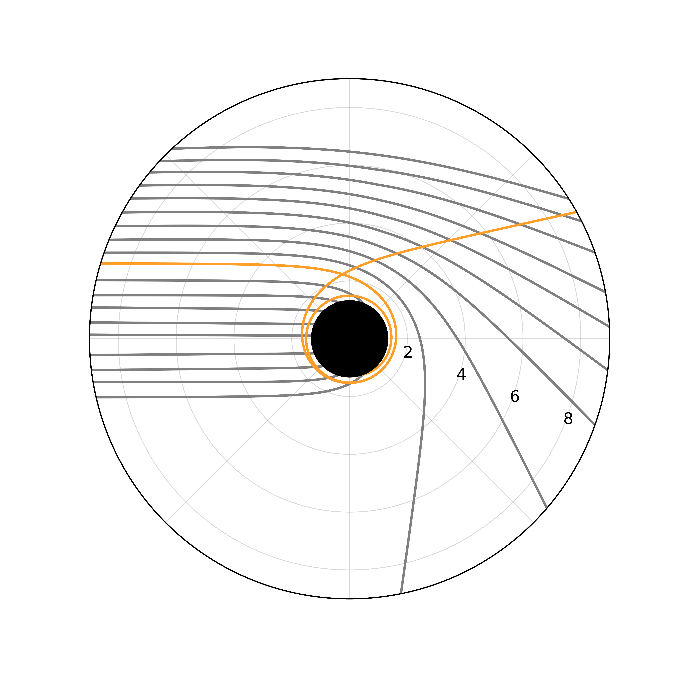

Edgar P. Vidal, Takeshi Nagasawa

Photon Trajectories Near None-Rotating Black Holes
Abstract
Inspired by the German physicist, Von Laue (1879–1960), who was the first person to publish a diagram showing the trajectory of light so strongly affected by gravity, we present a visualization of photons near a compact object at the 'gravitational cutoff' formally known today as a black hole. We will derive the equations of motion for a photon orbiting a black hole directly from the Schwarzchild metric. The solutions can be derived by hand to a certain point, but in our case, we opted for numerical code to solve differential equations through iterative analysis. We will not only provide diagram's of the photon orbits, but also provide an animation that displays the time dilation of a photon from an observers perspective along with source code to run it on your own computer.
